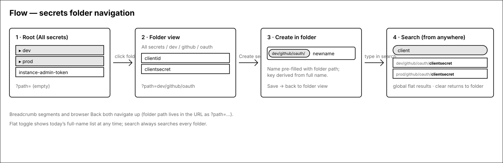
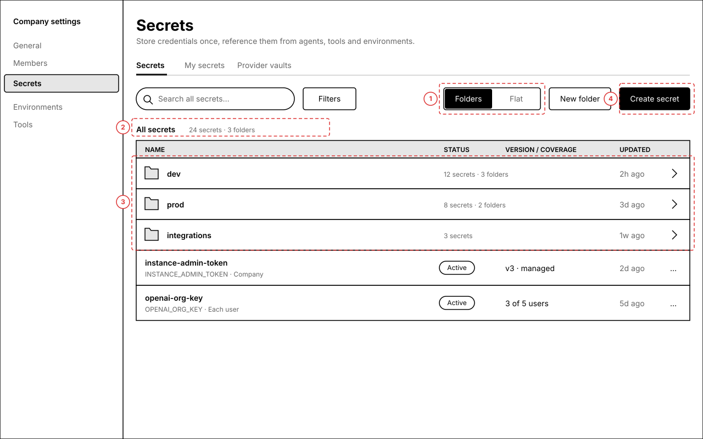
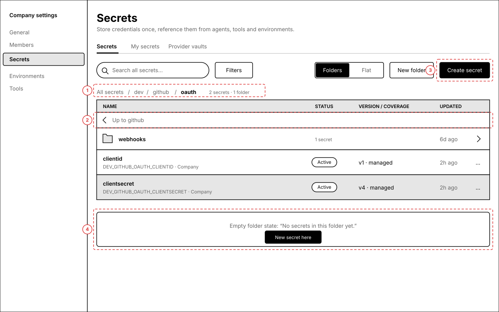
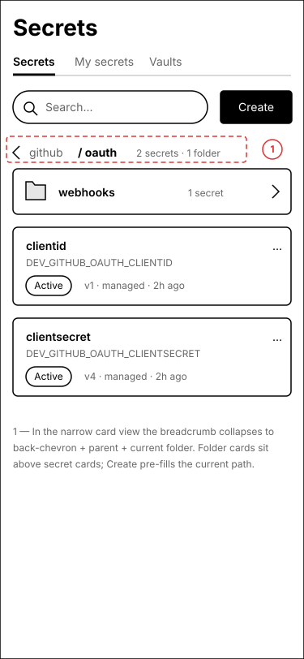
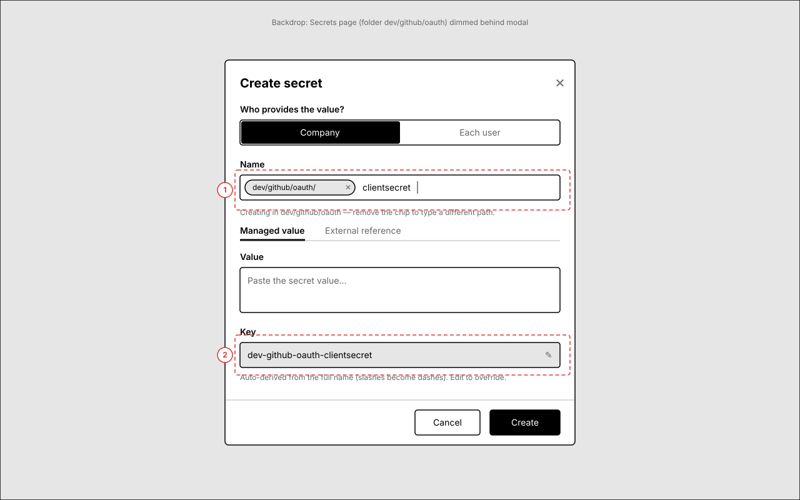
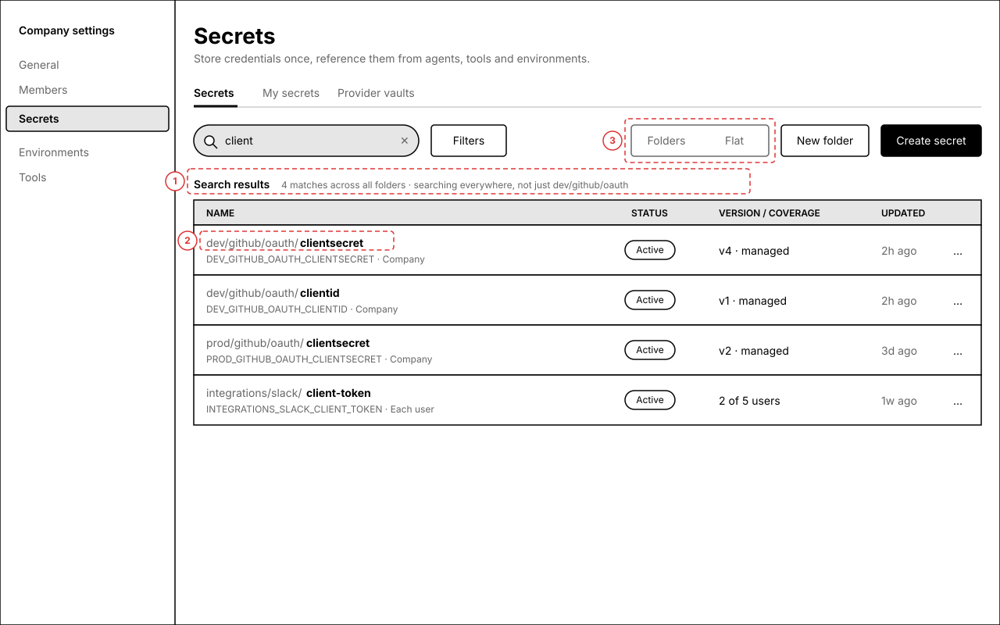

Secrets — navigate slash-named secrets as folders
Secrets already use path-style names like /dev/github/oauth/clientsecret (the create dialog's own placeholder is /dev/foo/bar), but the list renders them as one flat unsorted table. This set adds a derived folder view — no server or data-model change: folders are computed from name prefixes on the client. You can drill into a folder, see it in the URL, and create a secret "here" with the path pre-filled.
Root → folder → create-in-folder, with search as a global branch
Solid arrows are the happy path. The folder path lives in the URL (?path=dev/github/oauth) so breadcrumb, browser Back, and shared links all work. Search always escapes the current folder.

1.Root — folders above loose secrets
The Secrets tab keeps its exact table (Name / Status / Version-coverage / Updated / actions). Folder rows are synthesized from the first path segment of every secret name and sort above root-level secrets. Everything else on the page — tabs, filters, detail sheet — is untouched.

Annotations
- 1 — Folders / Flat segmented toggle. Flat is exactly today's list (full names); preference persists per user. Default = Folders.
- 2 — Breadcrumb row. At root it reads "All secrets" plus an aggregate count.
- 3 — Folder rows: folder icon, first path segment, recursive count ("12 secrets · 3 folders"), most-recent update inside, chevron. Click anywhere on the row to drill in. Secrets with no slash in their name list below folders as normal rows.
- 4 — "New folder" is a lightweight affordance: it only stages a path prefix for the create dialog (folders are name-derived and have no server record; an empty folder materializes when its first secret is saved).
2.Inside a folder — breadcrumb, leaf names, "up" row
Inside dev/github/oauth: clickable breadcrumb segments, subfolders first, then this folder's secrets shown by leaf name (the full env key stays visible in the code line beneath). The URL is ?path=dev/github/oauth, so Back and shared links land here.


Annotations
- 1 — Breadcrumb: "All secrets / dev / github / oauth". Every segment navigates; deep paths middle-truncate into a "…" dropdown after ~4 segments.
- 2 — "Up to github" utility row for keyboard/mouse users who prefer list navigation over the breadcrumb.
- 3 — Create secret opens the existing dialog pre-filled with this folder's path (screen 3).
- 4 — Empty-folder state (shown inline for reference): appears after "New folder" or when filters hide everything; primary action creates a secret here.
dev/github/oauth/; the existing detail sheet still shows the full name.3.Create secret with the folder path pre-filled
The existing create dialog (#9797 rework) gains a path-prefix chip in the Name field when opened from inside a folder. Type only the leaf name; the stored name is prefix + leaf and the env key derives from the full name exactly as today (slashes → dashes).

Annotations
- 1 — Prefix chip
dev/github/oauth/. Removing it (✕ or backspace at position 0) dissolves the chip into plain editable text for people who want a different path. Typing/inside the leaf simply extends the path — no validation change; names keep allowing slashes as before. - 2 — Key preview derives from the full name (
dev-github-oauth-clientsecret), exactly the existing normalize-on-type behavior. Pencil to override, as today.
4.Search — global, flat, full paths
Typing in search always searches every folder (name, key, description, external ref — unchanged fields) and presents flat results with the path prefix de-emphasized and the leaf bold. Clearing search returns to the folder you were in.

Annotations
- 1 — Result header replaces the breadcrumb: "Search results · N matches across all folders". The previous folder is remembered and restored on clear.
- 2 — Path prefix rendered muted, leaf bold. Clicking the muted path jumps to that folder; clicking the leaf opens the detail sheet as today.
- 3 — The Folders/Flat toggle is inert while a query is active (results are always flat), shown disabled to avoid a dead control.
Open questions
- Default view — proposal defaults to Folders when any secret contains a slash, Flat otherwise (small teams with plain names see no change). OK?
- New folder button — keep it (stages a transient empty folder + prefix for create), or drop it and let folders exist purely by creating a secret with a path? Dropping it is simpler; keeping it is more discoverable.
- Case & leading slash — grouping treats
/dev/xanddev/xas the same folder (leading/duplicate slashes normalized for grouping only; stored names untouched). Segment matching is case-sensitive to mirror name uniqueness. OK? - Move/rename to folder — a "Move to folder…" row action (bulk rename of the name prefix) is deliberately out of scope for v1; names are identity-ish (exact-match unique) and renames may deserve their own review. Flag if you want it in v1.
- My secrets tab — v1 applies folders to the main Secrets tab only (company + each-user definitions are already unified there). The "My secrets" values tab stays flat. OK?